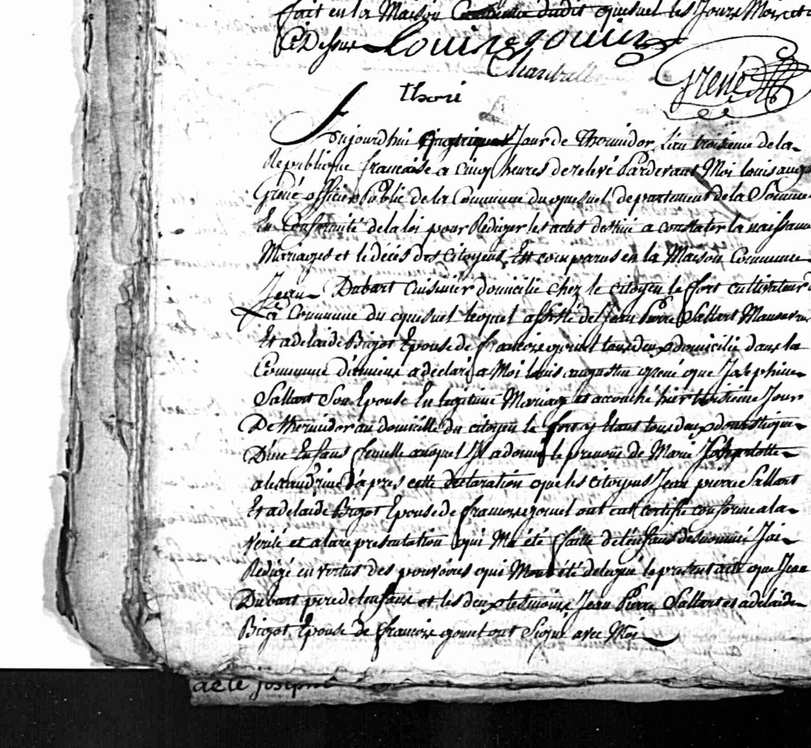

Acte d'état civil
Le Quesnel, naissances an III (Marie Josèphe Charlotte Alexandrine DUBART)
Ce document établit
- Une fille, Marie Josèphe Charlotte Alexandrine, est née de Jean Dubart et Josephine Sallart, mariés légitimement, au domicile de Le Fort au Quesnel ; déclarée par le père vérifié A0140
« « Josephine Sallart son épouse en légitime mariage est accouchée hier troisième [?] jour de Thermidor […] Marie Josephe Charlotte Alexandrine » »
- Jean (Alexandre) Dubart est dit « cuisinier » en l'an III, l'an IV (deux actes) vérifié A0143
« « Jean Alexandre Dubart cuisinier domicilié chez le citoyen Le Fort » »
- En 1795-1799, le couple demeure chez le citoyen Le Fort, au Quesnel ; les naissances de 1795, 1796 et 1799 ont lieu à son domicile vérifié A0146
« « domicilié chez le citoyen Le Fort » ; « au domicile dudit Le Fort » »
- Un Jean Pierre Sallart, maçon [?], et Adelaïde Bigot, épouse de François Gouel [?], domiciliés à Amiens [?], sont témoins de la naissance d'Alexandrine partiellement vérifié A0149
« « Jean Pierre Sallart maçon [?] et Adelaide Bigot épouse de François Gouel [?] » »
- L'arbre dit « concierge du château de Quesnel » : AUCUNE pièce lue ne le dit réfuté A0152
« - »
- La défunte de Moreuil 1859 est Marie Charlotte Alexandrine Dubart, née au Quesnel en 1795, fille de Jean Alexandre Dubart et de Josephine Sallart, mariée au Quesnel le 28/11/1816 à Florent Magloire Durson. partiellement vérifié A0289
- Dans l'acte de naissance d'Alexandrine (3 thermidor an III), le père déclare la naissance « au domicile du citoyen Le Fort y étant tous deux domestiques » : Jean (Alexandre) Dubart, cuisinier, et Josephine Sallart sont dits domestiques chez Le Fort ; les deux témoins qui signent avec lui sont Jean Pierre Sallart, maçon [?], et Adélaïde Bigot, épouse de François Gouel [?], dits domiciliés à Amiens [?] vérifié A0761
« « au domicile du citoyen Le Fort y étant tous deux domestiques » ; « Jean Dubart cuisinier domicilié chez le citoyen Le Fort cultivateur » ; « Jean Pierre Sallart […] et Adelaïde Bigot épouse de François Gouel […] ont signé avec moi » » (lecture incertaine : oui)
- Aux actes du Quesnel, le « citoyen Le Fort » chez qui demeurent les Dubart est qualifié « cultivateur » (an III, 3 thermidor), « propriétaire audit Quesnel » (20 thermidor an IV ; 1er fructidor an IV, naissance de Colombe ; 29 frimaire an VIII) ; en 1804 (26 brumaire an XIII), l'acte est signé « Le Fort, maire », sans prénom, et un Jean Louis Le Fort, propriétaire à Hamel-sous-Corbie [?], y est témoin vérifié A0762
« « chez le citoyen Le Fort cultivateur » » (lecture incertaine : non)
Personnes concernées
Jean « Alexandre » DUBART° 1759 † 1821Marie Josephine SALLART° 1766 † 1812Marie Josèphe Charlotte Alexandrine DUBART† 1859
image recadrée ; jour de naissance lu « troisième » [?]